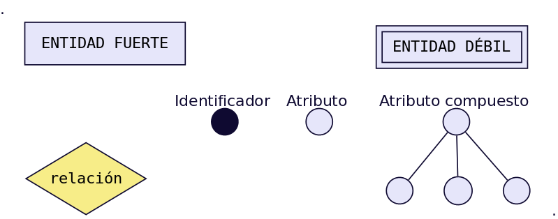

modelo entidad relacion
El modelo Entidad-Relación es el modelo más utilizado para el diseño conceptual de bases de datos. Fue introducido por Peter Chen en 1976 y se basa en la existencia de objetos a los que se les da el nombre de entidades, y asociaciones entre ellos, llamadas relaciones. Sus símbolos principales se representan en el cuadro siguiente.
entidades
Una entidad es cualquier objeto o elemento acerca del cual se pueda almacenar información en la BD. Las entidades pueden ser concretas como una persona o abstractas como una fecha. Las entidades se representan gráficamente mediante rectángulos y su nombre aparece en el interior. Un nombre de entidad sólo puede aparecer una vez en el esquema conceptual.
Atributos
Una entidad se caracteriza y distingue de otra por los atributos, en ocasiones llamadas propiedades o campos, que representan las características de una entidad. Los atributos de una entidad pueden tomar un conjunto de valores permitidos al que se le conoce como dominio del atributo. Dando valores a estos atributos, se obtienen las diferentes ocurrencias de una entidad. 